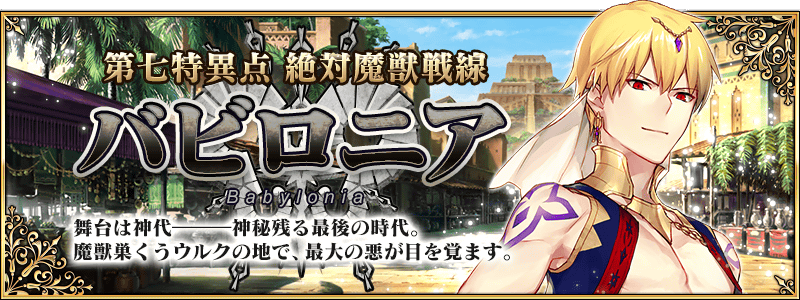
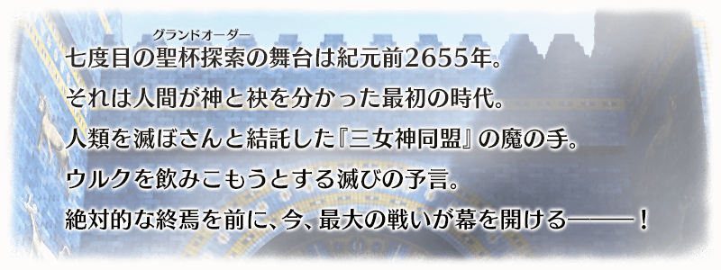
◆公開時間◆
2016年12月7日(三) 21:00～
◆概要◆
「第七特異點 絕對魔獸戰線 巴比倫尼亞」舞台為神代，世界最古老的都市文明。與新登場的Servant們展開緊張刺激的戰鬥。
◆開放條件◆
通過「第六特異點 神聖圓桌領域 卡美洛」後開放。
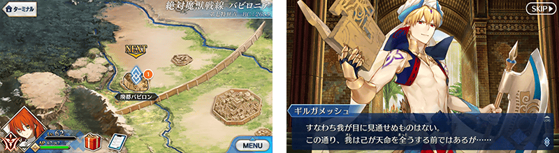
在Fate/Grand Order官方網站內的首頁及Gallery，公開第七章的電視廣告。
敬請確認。

從主線關卡第七章，追加新道具3種類！
為新登場Servant的技能強化及靈基再臨必要的道具。
主要可以從主線關卡第七章的敵人做為戰利品來獲得
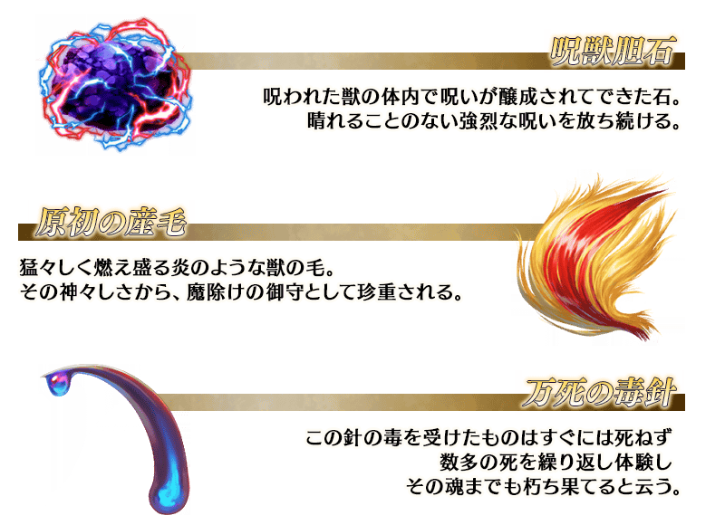
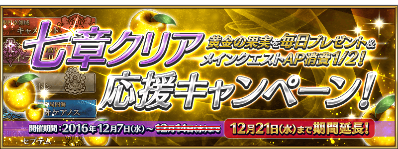
記念主線關卡第七章「第七特異點 絕對魔獸戰線 巴比倫尼亞」公開，實施七章通過應援宣傳活動。由於廣獲好評延長舉辦期間！
|
下述期間中，每天贈送2個黄金の果実做為登入獎勵！ ◆宣傳活動舉辦期間◆
※第1次的登入獎勵，從2016年12月7日(三) AM3:00配發。 |
做為第七章的開放條件，實施到「第六特異點 神聖圓桌領域 卡美洛」為止的主線關卡AP消費1/2宣傳活動。
無論如何藉此機會推進主線關卡吧！
◆舉辦期間◆
2016年12月7日(三) 21:00～12月14日(三) AM2:5912月21日(三) 12:59
※關於遊戲內的記載，會在12月14日(三)維修以後變更。
◆對象關卡◆
冬木、奧爾良、羅馬七省、歐開諾斯、倫敦、合眾為一、卡美洛內全部的主線關卡
※冬木、奧爾良、羅馬七省、歐開諾斯、倫敦、合眾為一、卡美洛内的自由關卡、幕間物語為對象外。
限定從「au遊戲」內的宣傳活動頁進入的玩家，實施課金金額返還15%錢包點數的宣傳活動。
詳情請從下列宣傳活動頁確認。
◆舉辦期間◆
2016年12月6日(二) 23:00～12月16日(五) 22:59
◆宣傳活動頁面◆
https://game.auone.jp/campaign/present_15percent_20161207/?rf=CP00252
※自宣傳活動起動時間，只限從Android裝置閲覧。請先諒解。
◆「巴比倫尼亞Pick Up召喚」期間◆
期間：2016年12月7日(三) 21:00～12月21日(三) 12:5912月31日(六) 22:59
※舉辦期間延長。
※關於遊戲內的記載，會在12月14日(三)維修以後變更。
記念第七章公開，以期間限定舉辦巴比倫尼亞Pick Up召喚！
※未到達第七特異點的狀態也能進行巴比倫尼亞Pick Up召喚。
在「第七特異點 絕對魔獸戰線 巴比倫尼亞」活躍的Servant「★5(SSR)恩奇杜」「★4(SR)美杜莎〔Lancer〕」「★4(SR)吉爾伽美什〔Caster〕」新登場！
另外，新概念禮裝「★5(SSR)魔性菩薩」「★4(SR)ルームガーダー」「★3(R)ミラクル求道者」也新登場！
Pick Up期間中，上述新登場Servant及新登場概念禮裝的出現機率提升！
※新登場Servant及新登場概念禮裝，在Pick Up召喚期間結束後也會在故事召喚出現。
詳情請在聖晶石召喚畫面左下的召喚詳細確認。
10次召喚中★4(SR)以上1張確定和★3(R)以上的Servant1位確定！
※★4(SR)以上確定包含Servant和概念禮裝。
※所謂「出現機率UP」意指比同稀有度的Servant出現機率更高的設定。
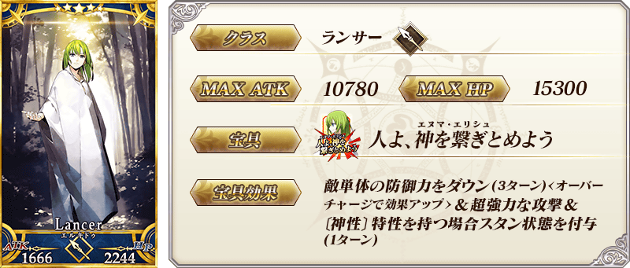
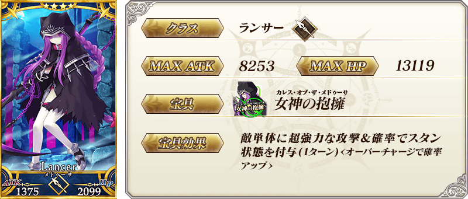
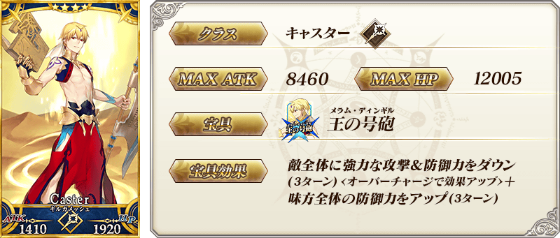
| 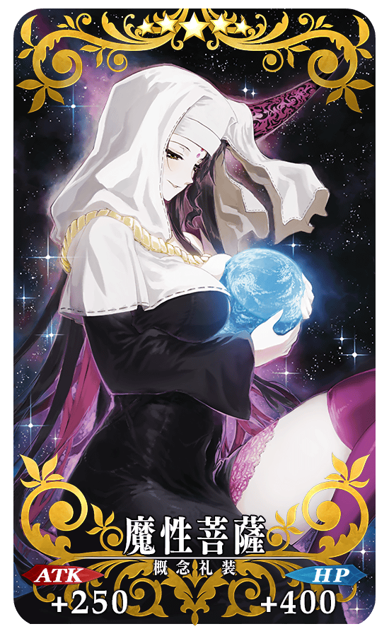 |
★★★★★SSR 魔性菩薩 ATK 250(最大：1000) HP 400(最大：1600) 技能 自身的NP以50％累積狀態開始戰鬥＆寶具使用時的蓄力階段加升2階段(1次) |
|
★★★★SR ルームガーダー ATK 0 HP 600(最大：2250) 技能 自身的星星集中度提升300%＆賦予傷害減免300狀態 |
|
★★★R ミラクル求道者 ATK 200(最大：1000) HP 0 技能 持有〔神性〕特性的Servant裝備的話寶具威力提升15% |
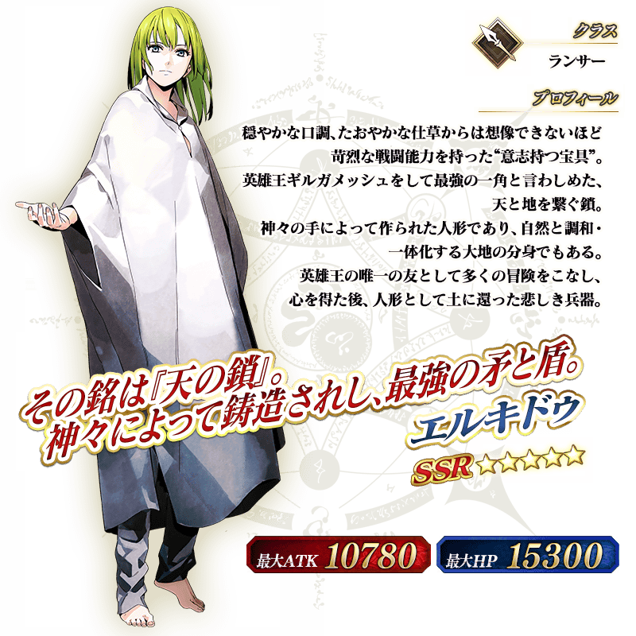

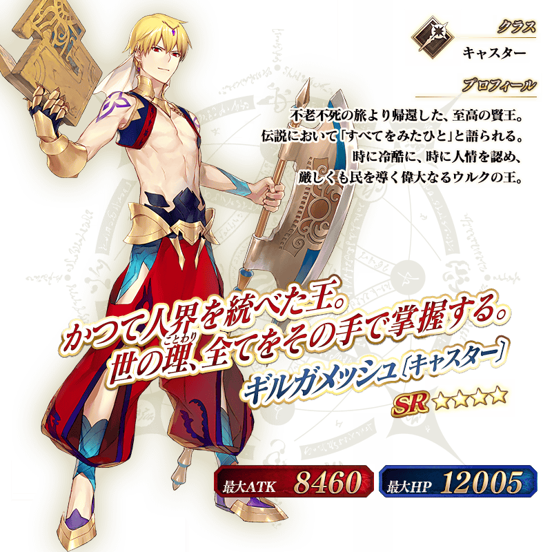